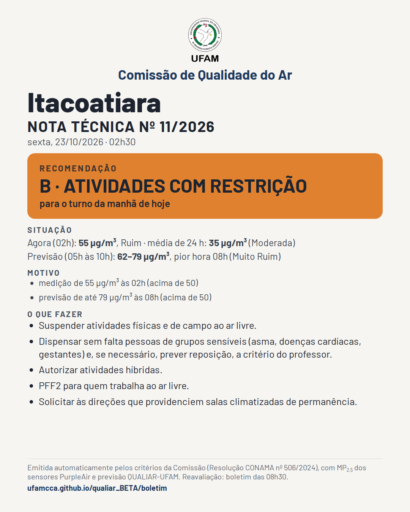
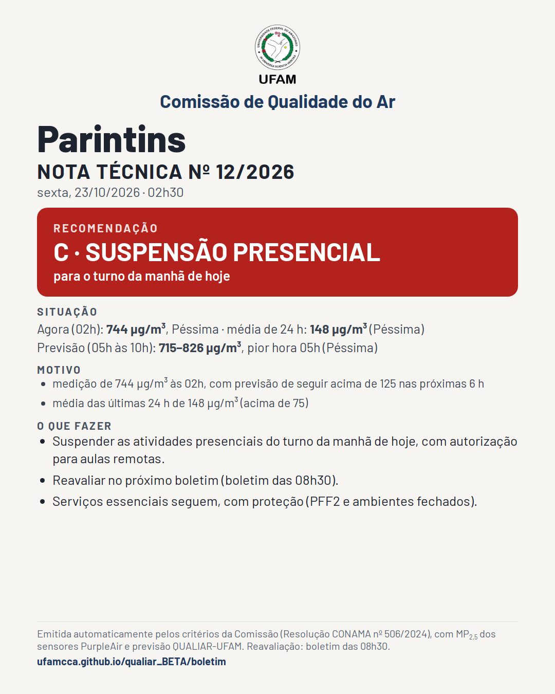
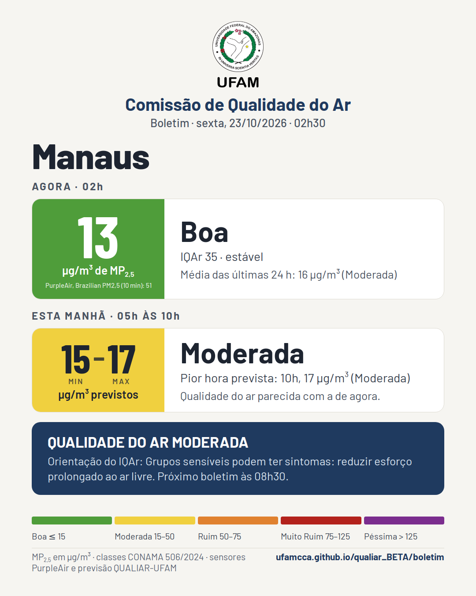
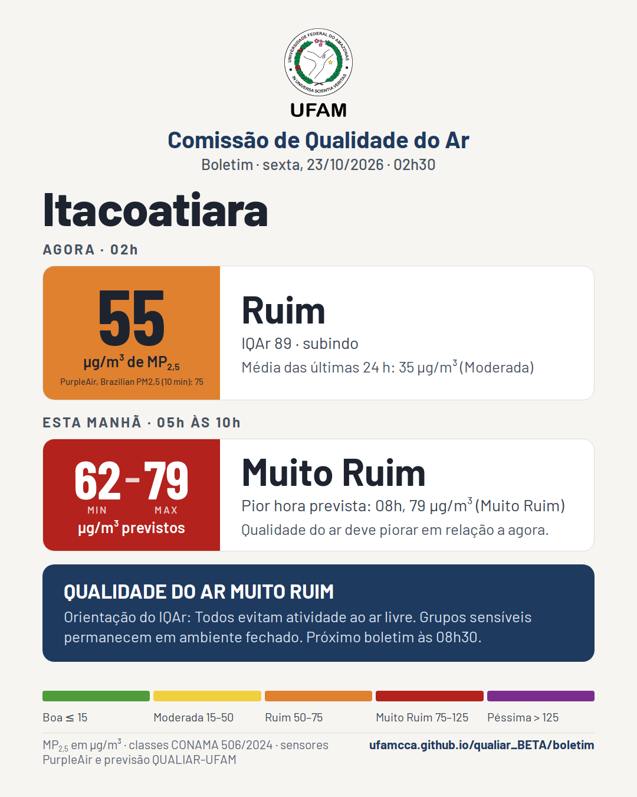
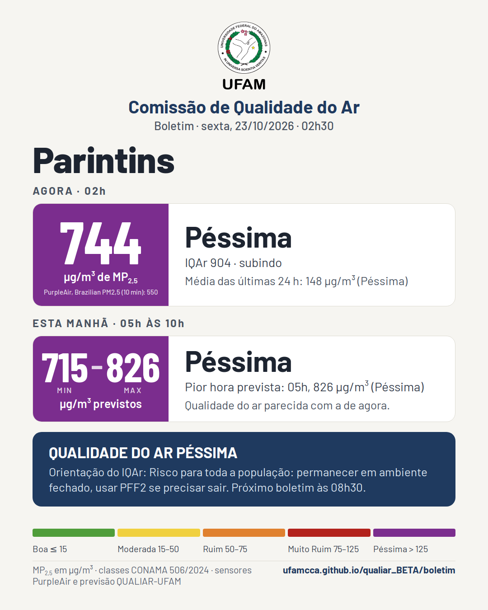
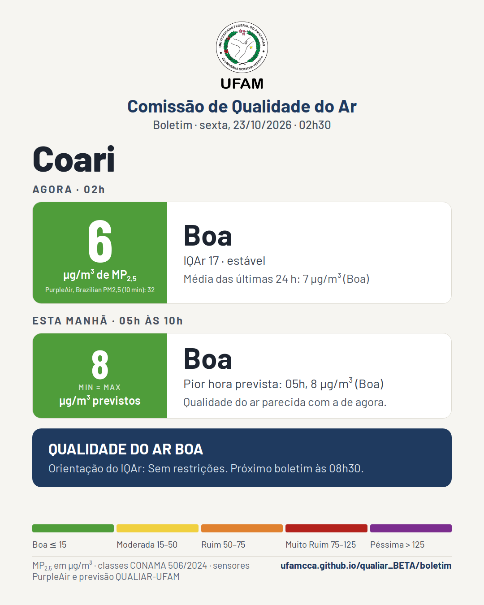

Boletim da qualidade do ar
Comissão de Qualidade do Ar da UFAM · edição de sexta, 23/10/2026, 02h30 · previsão hora a hora no QUALIAR-UFAM
Notas técnicas desta edição




Boletim










A Comissão emite nota técnica para a cidade só quando a recomendação é B (atividades com restrição) ou C (suspensão presencial). Valores de material particulado fino (MP2,5) em µg/m³, mediana dos sensores PurpleAir de cada cidade (correção EPA), classes da Resolução CONAMA nº 506/2024. A previsão é a versão publicada do modelo QUALIAR-UFAM. Boletins às 20h30, 02h30, 08h30 e 14h30. Toque na imagem para abrir em tamanho cheio e compartilhar.
Boletins anteriores
- 23/10/2026 02h30 · Manaus: agora 13 (Boa) → 15–17 (Moderada) · Itacoatiara: agora 55 (Ruim) → 62–79 (Muito Ruim) · Parintins: agora 744 (Péssima) → 715–826 (Péssima) · Humaitá: agora 13 (Boa) → 13–14 (Boa) · Coari: agora 6 (Boa) → 8 (Boa) · Benjamin Constant: agora 1 (Boa) → 8 (Boa) · Nota 11/2026: Itacoatiara, B · ATIVIDADES COM RESTRIÇÃO · Nota 12/2026: Parintins, C · SUSPENSÃO PRESENCIAL
- 22/10/2026 20h30 · Manaus: agora 17 (Moderada) → 16 (Moderada) · Itacoatiara: agora 43 (Moderada) → 55–69 (Ruim) · Parintins: agora 62 (Ruim) → 94–95 (Muito Ruim) · Humaitá: agora 16 (Moderada) → 14–16 (Moderada) · Coari: agora 8 (Boa) → 10 (Boa) · Benjamin Constant: agora 10 (Boa) → 15 (Boa) · Nota 9/2026: Itacoatiara, B · ATIVIDADES COM RESTRIÇÃO · Nota 10/2026: Parintins, B · ATIVIDADES COM RESTRIÇÃO
- 22/10/2026 14h30 · Manaus: agora 23 (Moderada) → 20 (Moderada) · Itacoatiara: agora 11 (Boa) → 19–27 (Moderada) · Parintins: agora 25 (Moderada) → 50–70 (Ruim) · Humaitá: agora 9 (Boa) → 8–9 (Boa) · Coari: agora 11 (Boa) → 11–12 (Boa) · Benjamin Constant: agora 1 (Boa) → 8–9 (Boa) · Nota 8/2026: Parintins, B · ATIVIDADES COM RESTRIÇÃO
- 22/10/2026 08h30 · Manaus: agora 10 (Boa) → 13–17 (Moderada) · Itacoatiara: agora 75 (Muito Ruim) → 70–79 (Ruim) · Parintins: agora 41 (Moderada) → 49–62 (Ruim) · Humaitá: agora 33 (Moderada) → 22–32 (Moderada) · Coari: agora 5 (Boa) → 9–10 (Boa) · Benjamin Constant: agora 0 (Boa) → 8 (Boa) · Nota 6/2026: Itacoatiara, B · ATIVIDADES COM RESTRIÇÃO · Nota 7/2026: Parintins, B · ATIVIDADES COM RESTRIÇÃO
- 22/10/2026 02h30 · Manaus: agora 12 (Boa) → 20–26 (Moderada) · Itacoatiara: agora 27 (Moderada) → 30–33 (Moderada) · Parintins: agora 133 (Péssima) → 154–164 (Péssima) · Humaitá: agora 1 (Boa) → 8 (Boa) · Coari: agora 6 (Boa) → 9–10 (Boa) · Benjamin Constant: agora 5 (Boa) → 8 (Boa) · Nota 5/2026: Parintins, C · SUSPENSÃO PRESENCIAL
- 21/10/2026 20h30 · Manaus: agora 31 (Moderada) → 14–28 (Moderada) · Itacoatiara: agora 18 (Moderada) → 28–34 (Moderada) · Parintins: agora 234 (Péssima) → 273–305 (Péssima) · Humaitá: agora 1 (Boa) → 10 (Boa) · Coari: agora 6 (Boa) → 15–16 (Moderada) · Benjamin Constant: agora 6 (Boa) → 8 (Boa) · Nota 4/2026: Parintins, C · SUSPENSÃO PRESENCIAL
- 21/10/2026 14h30 · Manaus: agora 28 (Moderada) → 28–29 (Moderada) · Itacoatiara: agora 29 (Moderada) → 38–44 (Moderada) · Parintins: agora 18 (Moderada) → 47–87 (Ruim) · Humaitá: agora 0 (Boa) → 13–14 (Boa) · Coari: agora 9 (Boa) → 24–26 (Moderada) · Benjamin Constant: agora 7 (Boa) → 8–9 (Boa) · Nota 3/2026: Parintins, C · SUSPENSÃO PRESENCIAL
- 21/10/2026 08h30 · Manaus: agora 24 (Moderada) → 28–32 (Moderada) · Itacoatiara: agora 46 (Moderada) → 42–46 (Moderada) · Parintins: agora 35 (Moderada) → 42–70 (Ruim) · Humaitá: agora 14 (Boa) → 10–14 (Boa) · Coari: agora 16 (Moderada) → 10–14 (Boa) · Benjamin Constant: agora 8 (Boa) → 8 (Boa) · Nota 2/2026: Parintins, C · SUSPENSÃO PRESENCIAL
- 21/10/2026 02h30 · Manaus: agora 22 (Moderada) → 9–23 (Boa) · sem medição · Parintins: agora 245 (Péssima) → 83–167 (Péssima) · Humaitá: agora 13 (Boa) → 15–16 (Moderada) · sem medição · Benjamin Constant: agora 8 (Boa) → 8 (Boa)
- 20/10/2026 20h30 · Manaus: agora 23 (Moderada) → 9–29 (Boa) · sem medição · Parintins: agora 46 (Moderada) → 22–42 (Moderada) · Humaitá: agora 15 (Boa) → 18 (Moderada) · sem medição · Benjamin Constant: agora 9 (Boa) → 8 (Boa)